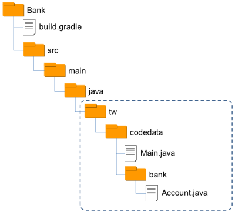

雖然在 Java Tutorial 第二堂（1）中談過，Java 中並非每個值都是物件，不過 Java 基本上是個以物件導向為主要典範的語言，任何程式都以定義類別為出發點，即使只是個「哈囉！世界！」也不例外：
public class HelloWorld {
public static void main(String[] args) {
System.out.println("哈囉！世界！");
}
}不過這看來不太像物件導向，若只是這樣的需求，似乎也不需要動用到物件導向，如果 Java 具有其他語言中函式（Function）的概念，不是可以更簡單一些，呼叫個
println("哈囉！世界！") 就解決這個問題嗎？直接從類別定義出發，再定義靜態方法（Static method），對一些簡單需求來說，確實是不必要，不過就程式的組織與架構上，Java 的作法與一些語言並沒有差別，只不過要求你明確定義類別及定義方法罷了，這篇文章後續會說明這點。 基本上，無論採用何種典範，關鍵在於架構程式時應思考的幾個重點，像是…
- 抽象層的封裝與隔離
- 物件的狀態
- 名稱空間（Namespace）
- 資源的實體組織方式，像是原始碼檔案、套件（Package）等
幸運地，Java 中對於這幾個思考重點，在實作時提供的機制算是為完整，提供了像是靜態方法、類別（Class）與套件等支援。
靜態方法
不管你願不願意，想撰寫第一個可執行的 Java 程式，就一定得接觸靜態方法，因為程式進入點就規定一定得是public static void main(String[] args)，而且必須定義在類別之中，在初學階段，對於靜態方法可以先理解為，它就像是其他語言中的函式。舉例而言，當發現到兩個程式片段極為類似，只有當中幾個計算用到的數值或變數不同時，例如 main 中可能如此撰寫：
...
Integer max1 = a > b ? a : b;
...
Integer max2 = x > y ? x : y;
...可以使用靜態方法來封裝程式片段，將流程中引用不同數值或變數的部份設計為參數，例如：
/* 存為 Math.java */
class Math {
static Integer max(Integer a, Integer b) {
return a > b ? a : b;
}
}靜態方法得定義在類別之中，如此一來，就可以在其他地方透過類別名稱來呼叫靜態方法，例如
main 中可直接如下呼叫：
...
Integer max1 = Math.max(a, b);
...
Integer max2 = Math.max(x, y);
...就某些程度上，包括靜態方法的類別充當了名稱空間，就像是 Python 中模組之作用，而類別中的靜態方法，就像是 Python 中的函式，而函式是一種抽象，對流程的抽象，因此如上定義了
Math.max 靜態方法之後，客戶端對求最大值的流程，被抽象為 Math.max(x, y) 這樣的呼叫，求值流程實作被隱藏了起來。 Java 中有一些 API，就是以這樣的概念來實現，像是
java.lang.Math 中就有大量與數學相關的靜態方法，而想到陣列操作時，也可以看看 java.util.Arrays 中有沒有現成的靜態方法可以使用，當想操作的功能不渉及狀態時，可以考慮使用靜態方法，就像是這邊的 Math.max，因為傳入的兩個值是平等的，跟任何物件的狀態沒有關係。 那麼 Java 中的靜態方法，就只是函式的概念嗎？不！不只是這樣的，這篇文章稍後，馬上就可以看到靜態方法的其他應用…
類別
如果只是將類別拿來當作靜態方法的名稱空間，並不是什麼物件導向，那類別的應用場合呢？…嗯…在你想要表達一組相關聯的數據時，例如，若你想表達帳戶資料，而帳戶有名稱、帳號與餘額，為了易於操作，可定義類別將它們視為一個整體：/* 存為 Account.java */
class Account {
String name;
String number;
Integer balance;
}這麼一來，就使用
new Account() 來建立物件並進行操作，也許一開始，你是定義了一些靜態方法來建立與操作 Account 實例：
/* 存為 Bank.java */
class Bank {
static Account account(String name, String number, Integer balance) {
Account acct = new Account();
acct.name = name;
acct.number = number;
acct.balance = balance;
return acct;
}
static void deposit(Account acct, Integer amount) {
if(amount <= 0) {
throw new IllegalArgumentException("amount must be positive");
}
acct.balance += amount;
}
static void withdraw(Account acct, Integer amount) {
if(amount > acct.balance) {
throw new RuntimeException("balance not enough");
}
acct.balance -= amount;
}
static String toStr(Account acct) {
return String.format("Account(%s, %s, %d)",
acct.name, acct.number, acct.balance);
}
}當中是有關於帳戶建立、存款、提款等函式，你會這麼使用：
public class Main {
public static void main(String[] args) {
Account acct = Bank.account("Java", "001", 100);
Bank.deposit(acct, 500);
Bank.withdraw(acct, 200);
System.out.println(Bank.toStr(acct));
}
}實際上，
Bank 類別中的靜態方法，都是與傳入的 Account 實例，也就是代表帳戶狀態的物件相關，每個靜態方法的第一個參數是 Account，就暗示了這些方法應該與 Account 類別放在一起，何不將相關的狀態與操作黏在一起呢？這樣比較容易使用些，因此你重新定義了 Account 類別：
class Account {
private String name;
private String number;
private Integer balance;
Account(String name, String number, Integer balance) {
this.name = name;
this.number = number;
this.balance = balance;
}
void deposit(Integer amount) {
if(amount <= 0) {
throw new IllegalArgumentException("amount must be positive");
}
this.balance += amount;
}
void withdraw(Integer amount) {
if(amount > this.balance) {
throw new RuntimeException("balance not enough");
}
this.balance -= amount;
}
String toStr() {
return String.format("Account(%s, %s, %d)",
this.name, this.number, this.balance);
}
}在
Account 類別中，與類別名稱同名且沒有宣告傳回值型態的方法，稱之為建構式（Constructor），它定義了物件的初始流程，取代了原本的 account 靜態方法，注意到每個類別中的方法沒有宣告 static，這表示它是個實例方法，方法中的 this 表示物件本身，如果沒有與參數名稱衝突的話，基本上可以省略，不過有時寫出來比較清楚易懂。 我們希望客戶端必須透過
deposit、withdraw 等操作物件，而不是直接存取物件的 name、number 與 balance 等狀態成員，這樣 deposit、withdraw 中設定的流程控管才有意義，因此在 name、number 與 balance 等狀態成員上設定了 private，表示這只能是類別內部的程式碼才能存取。 如此定義之後，客戶端在使用上就容易得多了…
public class Main {
public static void main(String[] args) {
Account acct = new Account("Java", "001", 100);
acct.deposit(500);
acct.withdraw(200);
System.out.println(acct.toStr());
}
}是的！容易使用！在討論物件導向時，大家總是愛談可重用性（Reusability），然而要談到重用性的話，函式的重用性還高上許多，在考量物件導向時，易用性（Usability）其實才是它的重點。
套件
假設現在你有一些 .java 與編譯完成的檔案，別人同樣也有一堆 .java 與 .class 檔案，你們的檔案現在得放在同一專案中，那麼檔案名稱衝突是有可能發生的，最好是為你們的 .java、.class 檔案分別開設目錄；另一方面，只使用外部類別充當名稱空間，也不是好的作法，當多個名稱空間階層時，就會有許多不便。使用 Java 時，你可以在原始碼開頭使用
package 來宣告套件階層。例如，想將你的 Account 宣告在 tw.codedata.bank 套件階層之下的話，可以如下：
package tw.codedata.bank;
public class Account {
private String name;
private String number;
private Integer balance;
public Account(String name, String number, Integer balance) {
this.name = name;
this.number = number;
this.balance = balance;
}
public void deposit(Integer amount) {
if(amount <= 0) {
throw new IllegalArgumentException("amount must be positive");
}
this.balance += amount;
}
public void withdraw(Integer amount) {
if(amount > this.balance) {
throw new RuntimeException("balance not enough");
}
this.balance -= amount;
}
public String toString() {
return String.format("Account(%s, %s, %d)",
this.name, this.number, this.balance);
}
}使用
package 宣告 Account 是在 tw.codedata.bank 意謂著幾件事，如果在其他套件中使用它，必須使用類別全名 tw.codedata.bank.Account，Account.java 必須放置在原始碼路徑（SOURCEPATH）（可使用 javac 的 -sourcepath 指定）的 tw/codedata/bank 目錄中，編譯完成的 Account.class 必須放在類別路徑（CLASSPATH）的 tw/codedata/bank 目錄中，在遵守這幾件規範，以及好的階層命名下，可以減少名稱空間檔案與衝突的發生。 注意，程式中宣告了
public，這意謂著被公開的類別或方法對其他套件中的程式碼來說是有用的，沒有宣告任何權限時，預設並不會對其他套件公開這些資訊，只能在相同套件中使用。 在類別中還定義了
toString 方法來取代 toStr，許多程式庫若想要取得物件的字串說明，都會透過 toString 方法，例如 System.out.println 方法，如果給它個物件，都就會自動呼叫物件的 toString，然再用取得的字串進行文字輸出。 假設你在先前的 Main.java 中宣告套件：
package tw.codedata;
import tw.codedata.bank.Account;
public class Main {
public static void main(String[] args) {
Account acct = new Account("Java", "001", 100);
acct.deposit(500);
acct.withdraw(200);
System.out.println(acct);
}
}因為類別全名為
tw.codedata.bank.Account 打來有些冗長，因此這邊使用 import tw.codedata.bank.Account 先聲明了後續的 Account 應該會是 tw.codedata.bank.Account，同樣的，這個 Main.java 與編譯出來的 Main.class 要各自放在原始碼路徑與類別路徑的 tw/codedata 目錄下。 練習 7：運用類別與套件來組織程式
在練習用的檔案中，有個 exercises/exercise7/Bank 目錄，這個目錄符合 Gradle 架構，裏頭草草寫了一些類別與靜態方法，以及執行結果輸出的程式碼，請利用這邊介紹的類別與套件等語法，來重新組織當中可重用的程式碼，讓它們可以位於
tw.codedata、tw.codedata.bank 套件中的適當類別。 最後，你完成的程式在實體架構上，應該會像是以下的圖片示意（如果不知道怎麼完成實作，記得參考練習用檔案中 solutions/exercise7/Bank 的成果 ）：
{kind=link}

再看靜態方法
實際上，Java 的靜態方法並非只是將外部類別作為名稱空間，常見的運用之一是將靜態方法用來隱藏物件實作與建構細節，像是 Guava 的ImmutableList，實際上你並不用去知道實作類別有哪些，也因此也不用想辦法使用 new 來建構實例，而是透過 of 靜態方法來取得 ImmutableList 實例。 類似的應用還有實現單例（Singleton），例如 Java 中的
java.lang.Runtime類別實作如下：
public class Runtime {
private static Runtime currentRuntime = new Runtime();
public static Runtime getRuntime() {
return currentRuntime;
}
/** Don't let anyone else instantiate this class */
private Runtime() {}
// 略 ...
}建構式被設為
private，因此 Runtime 類別以外的程式碼都不能建構它的實例，只有 Runtime 類別內部可以建立實例，也因此，實現了每個 JVM 執行時都有唯一的 Runtime 實例。 第二堂時間差不多到了，休息一下，接下來的第三堂課要來認識 Java 的 IDE、社群、文件以及更多的 API …